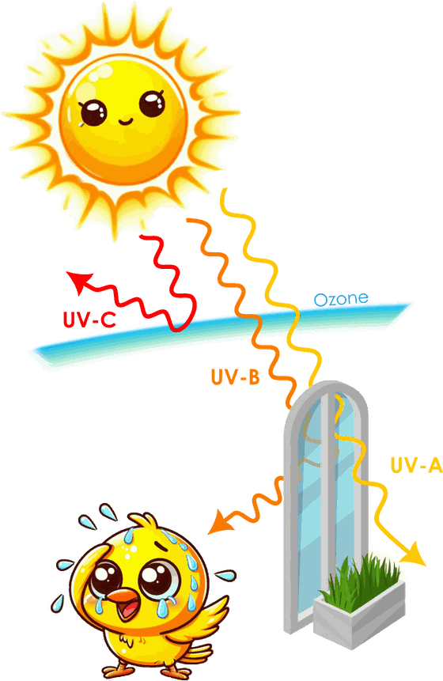

The science
Every line on the screen
has a paper behind it.
Particulates, carbon dioxide, ultraviolet, temperature, humidity, pressure. Each one is on the screen because published research says it matters, not because the sensor was easy to add. Four white papers cover the six measurements. Here is the short version of each, with the full text to download.
The one exception is luminosity, which Canary logs as a useful indicator rather than as a health measurement.

Particulate matter
Size decides how deep it gets.
Particulate matter is not one thing. It is a mixture of solid and liquid particles that varies continuously in size and chemistry, and the size is what determines where a particle ends up in you.
Coarse particles, between 2.5 and 10 µm, mostly deposit in the upper airways, where the mucociliary escalator can clear them. Fine particles below 2.5 µm reach the respiratory bronchioles and the alveoli, where gas exchange happens. Ultrafine particles under 0.1 µm can cross into the bloodstream and reach organs beyond the lungs, including the brain.
The effect sizes are measurable at population scale. A study of 12 million Medicare beneficiaries across 108 US counties found that a 10 µg/m³ rise in PM2.5 was associated with a 0.71% increase in same-day cardiovascular hospital admissions, and a 0.44% increase in respiratory admissions at a two-day lag. Long-term exposure is linked to accelerated atherosclerosis, reduced heart rate variability, and raised risk of myocardial infarction, stroke and heart failure.
This is why Canary reports particle size bands rather than a single number. The chart on the device shades PM1.0, PM2.5 and PM10 separately, because the same total mass means something different depending on how it is distributed.
Carbon dioxide
The pollutant you exhale.
Outdoor air sits around 420 ppm. Indoors, concentrations routinely run from 400 ppm to over 3,000 ppm depending on how many people are in the room, how well it ventilates, and how the building was designed.
At 1,000 ppm, one landmark study found moderate and statistically significant decrements in six of nine scales of decision-making performance compared with 600 ppm. At 2,500 ppm there were large reductions in seven scales, including strategy, initiative and information utilisation.
The important detail in that study is the method: the effect appeared when pure CO2 was added while ventilation was held constant. That makes CO2 a direct indoor pollutant in its own right, not merely a convenient marker for stuffy air. A critical review of 37 experimental studies reached the same conclusion, with the strongest evidence for high-level decision-making.
Symptoms track it too. Office workers in spaces averaging 2,700 ppm showed raised transcutaneous CO2 and greater sleepiness during cognitive work, and workers above 800 ppm were more likely to report eye irritation and upper respiratory symptoms.
Classrooms are the worst case, because the occupant density is highest and the people in them are children. A study of UK schools found CO2 above 1,500 ppm for 31% of the school week on average, and in one classroom 72% of the time. Teachers feel it too: for every 100 ppm rise in peak classroom CO2, the odds of reporting headache, fatigue or difficulty concentrating rose by 30%.
Those numbers are why the CO2 readout keeps a full day of history rather than a single figure. A room at 1,400 ppm at 7am that clears by 9am is a different problem from one that sits at 1,400 ppm all day.

Ultraviolet
Not all sunlight is the same sunlight.
Ultraviolet splits into three bands. UV-A runs 315 to 400 nm, UV-B 280 to 315 nm, and UV-C 100 to 280 nm. They behave completely differently.
UV-C is essentially absent from natural sunlight because ozone blocks it; the exposure people get comes from germicidal lamps, welding arcs and similar industrial sources. UV-B is mostly absorbed by ozone but still arrives in biologically significant amounts, and it is what drives sunburn, direct DNA damage and vitamin D synthesis. UV-A penetrates deepest into skin, passes readily through window glass, and typically delivers 20 to 30 times more energy to skin than UV-B does.
Eyes accumulate the damage. UV-B causes acute photokeratitis, the snow blindness that welders and skiers know about, and cumulatively contributes to cataract, pterygium and climatic droplet keratopathy. In outdoor workers, the risk of cortical cataract rises around 1.6-fold per doubling of cumulative UV-B exposure. Children matter more here: their lenses transmit more UV than adults’ do.
What makes a meter useful is that behaviour matters more than the forecast. Personal exposure depends far more on where you stand than on the ambient index, and walking in tree shade can cut a two-hour dose substantially. A bright day is not automatically a harmful one, and an overcast one is not automatically safe.
Temperature, humidity, pressure
The weather gets indoors too.
These three usually get treated as comfort settings. The research treats them as performance and safety variables, and the thresholds are lower than most people expect.
Productivity falls roughly 2% for every degree above 25 °C. Moving a room from 23 °C to 27 °C measurably reduced typing output and Stroop test scores even when people adjusted their clothing to stay comfortable, alongside a raised heart rate and reduced heart rate variability. Bedrooms above 24 °C compromise sleep, and during heat waves each additional degree raised the risk of sleep disturbance in older occupants by 24%. Most heat-related deaths happen indoors, and older adults store 1.8 times more body heat than younger ones while feeling it less, which is exactly the case for measuring a room rather than judging it.
Humidity decides what that heat costs you, because it governs whether sweat can evaporate. At 37 °C, raising relative humidity from 50% to 70% moved average comfort from “just comfortable” to “just uncomfortable” and took the share of uncomfortable people from 29% to 42%. Below about 30 °C it barely registers. Cold and damp together are the dangerous pairing: across 1.2 million deaths in 91 counties, stroke mortality risk under extreme cold with humidity above 70% was roughly double the risk from extreme cold alone.
Pressure is the one people feel before they can explain. Migraine attacks cluster when barometric pressure drops 6 to 10 hPa below standard, the range that corresponds to an approaching low. Over 70% of migraine patients in one study reported pressure-triggered headaches, against 21% of tension-headache controls. A personal barometer catches that fall where you actually are, often before any forecast reaches you.
What this is, and is not.
The summaries above describe published research on what Canary measures, and the linked papers carry the full citations. They are not medical advice.
Canary is a monitor. It measures the air and shows you what it finds. It does not diagnose, treat or prevent any condition, it does not clean the air, and no consumer instrument is intended to replace laboratory equipment. What it gives you is the information to decide whether to open a window, run a purifier, change a filter or move into the shade.
The founding batch
Measure it in your own rooms.
All of the above is about air in general. Canary tells you about yours. Join the waitlist and we will tell you once, when the founding batch opens.